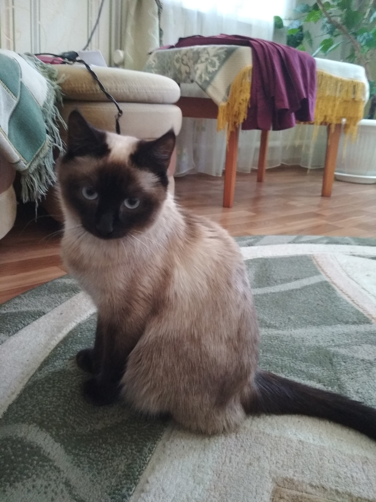

Мои бусинки
Я очень люблю своих домашних животных. Мне не нравится, когда люди говорят, что любят только собак или котов.Это неправильно, потому что каждое животное такое, какими мы их воспитали.

Это Кира, она чистокровный лабрадор-ретривер, это очень тихая и верная порода собак. Так как мой отец кинолог, то Кира очень вопитанная и умная собака. С ней связано очень много воспоминаний. И если рассказывать всё, то наверно понадобилась бы целая книга.

А это Таисия, сиамская кошечка, ей еще всего лишь один годик, но она уже полноценный член семьи.
Таисия-кошка с характером, и если ей что-то не нравится, она непременно даст об этом знать. Но какой-бы злюкой она не была, я всё равно её люблю.